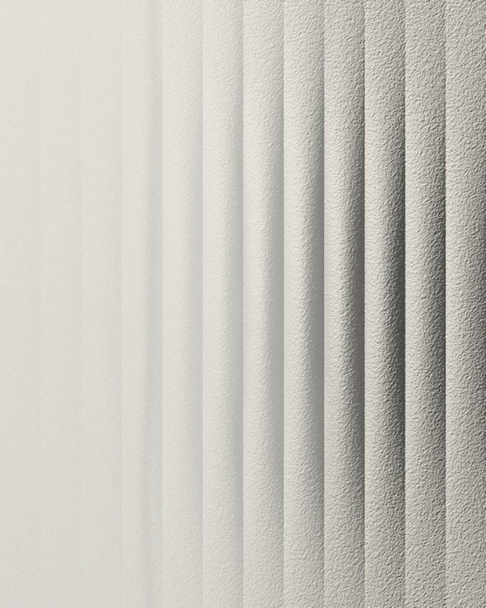
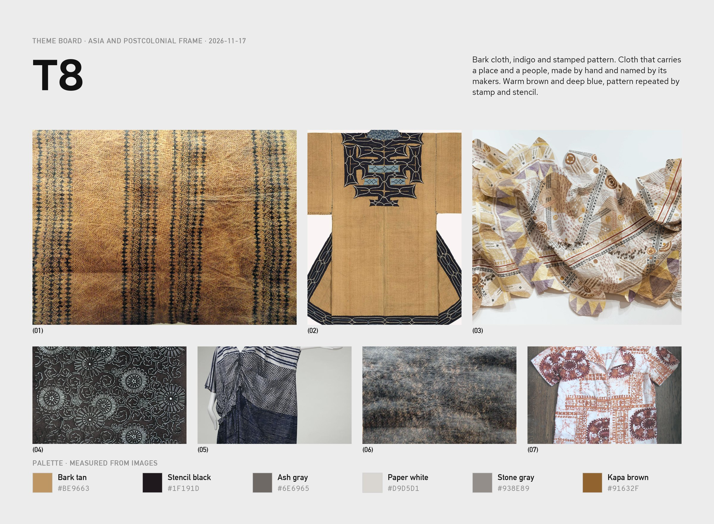

The facade
The picture is not the thing.



Abstract
How was the look of a building or object used to get things done, and where did the picture come apart from the thing? Colonial architecture is the clearest case, because the facade made the argument: classical order in a capital planned from 1911 to command, a friendly style that historians read as an attempt to win consent, a blended style that still controlled, and an old quarter kept apart from the new city. It backfired: the old quarter was left to decay, and the government building Japan set in front of a Korean palace became the symbol people began tearing down in 1995. Japan stood on both sides: Yanagi, the critic who championed the unknown craftsman, pleaded in 1922 for the palace gate cleared for that building, yet framed Korean craft as a beauty of sorrow, and the gate was only moved. Design then split two ways: craft by those with a stake in a region, and an international style that pursued purity until it was criticized for its European, antiquity-bound roots. The international look became a status of its own by removing the hand, and with it the labor, the working class and the poor. Home building copied the facade everywhere, keeping the look and leaving the makers behind. Luxury handwork follows the same rule: labor is worth money only while no mistake shows who made it, as in a flawless marble figure, so what a hand is worth is never fixed. Today the picture comes first: renderings and simulations set expectations of texture, finish and performance before anything is made, so the image becomes part of the design and not a description of it. What can a designer's picture promise, and to whom, that the maker can still deliver?
Overall mood
Warm bark brown and deep indigo. Cloth whose pattern was stamped, stenciled or stitched by hand, and that still carries the people who made it. Pale grounds, dark repeating marks, quiet and exact.


Definition and test
The test. Whose tradition is it, and who is speaking for it? Evidence of: origin.
Motifs
- Stamped and stenciled pattern. A mark repeated by hand through a tool: Hawaiian kapa stamps (summary: "kapa"), Japanese katagami stencils (summary: "Japanese designers"). Images (01), (04), (06).
- Natural fiber and natural dye. Bark cloth, elm-bark cloth, indigo. Test sentence: whose tradition (the material is the place). Images (01), (02), (06).
- A designer reworks a resist-dye tradition. Summary: "Japanese designers". Images (04), (05).
- The maker speaks for the tradition. Test sentence: who is speaking for it. Ainu robe made by an Ainu woman (02) and a contemporary Native Hawaiian kapa artist (03).
Motif 4 is visible only through the caption; a photo cannot show who is speaking.
Counter-case. Image (07), a vintage aloha shirt with a tiki-style printed pattern. Maker and the source of the pattern are not stated; the look of a tradition without its speaker. Marked here because the builder cannot mark it on the page.
Against (what T8 replaces)
The pattern that borrows a tradition's look and leaves out the people, the place and the method behind it.
Color
The theme gives no color direction. The palette is measured from the images only (below), and describes these images, not a rule for the theme.
Palette
Measured by k-means clustering in CIE Lab on images (01) to (06), ungraded; the counter-case (07) is left out. Names are descriptive. Not added to the master color book.
| HEX | Name |
|---|---|
#BE9663 |
Bark tan |
#1F191D |
Stencil black |
#6E6965 |
Ash gray |
#D9D5D1 |
Paper white |
#938E89 |
Stone gray |
#91632F |
Kapa brown |